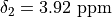

Setting Up a Simulation¶
Defining the Spin System¶
You can define a spin_system using the SpinSystem class,
with which you can specify:
The isotope, isotropic chemical shift, and scalar couplings for each spin.
The temperature (298K by default).
The field strength (500MHz by default).
As an example, Levitt’s Spin Dynamics describes 2,3-Dibromopropanoic acid as possessing protons with the following properties:

Such a spin system can be created as follows:
from nmr_sims.spin_system import SpinSystem
system = SpinSystem(
{
1: {
"shift": 3.7,
"couplings": {
2: -10.1,
3: 4.3,
},
"nucleus": "1H",
},
2: {
"shift": 3.92,
"couplings": {
3: 11.3,
},
"nucleus": "1H",
},
3: {
"shift": 4.5,
"nucleus": "1H",
},
}
)
Setting "nucleus" = "1H" for each spin is not strictly necessary, as by default this is
assumed (see the default_nucleus argument). For a description on specifying nuclei, look
at nuclei.
Running a Simulation¶
To run a simulation, you need to import the corresponding class, which will be found in
one of the submodules within experiments. For example, to perform a
simple pulse-acquire experiment, you can use the
PulseAcquireSimulation class, providing the spin system,
along with required expriment parameters:
from nmr_sims.experiments.pa import PulseAcquireSimulation
from nmr_sims.spin_system import SpinSystem
# --snip--
sw = "2ppm"
offset = "4ppm"
points = 4096
channel = "1H"
pa_simulation = PulseAcquireSimulation(system, points, sw, offset, channel)
pa_simulation.simulate()
# The following is output to the terminal:
#
# Simulating ¹H Pulse-Acquire experiment
# --------------------------------------
# * Temperature: 298.0 K
# * Field Strength: 11.743297569643232 T
# * Sweep width: 500.000 (F1)
# * Channel 1: ¹H, offset: 2050.000 Hz
# * Points sampled: 8192 (F1)
The FID generated can then be accessed by the fid()
property. A process spectrum, along with chemical shifts and axis labels can be generated with the
spectrum() method.
import matplotlib.pyplot as plt
from nmr_sims.experiments.pa import PulseAcquireSimulation
from nmr_sims.spin_system import SpinSystem
# --snip --
pa_simulation.simulate()
# Zero fill to 8192 points by setting zf_factor to 2
shifts, spectrum, label = pa_simulation.spectrum(zf_factor=2)
fig, ax = plt.subplots()
ax.plot(shifts, spectrum.real, color="k")
ax.set_xlabel(label)
ax.set_xlim(reversed(ax.get_xlim()))
fig.savefig("pa_spectrum.png")
As a second example, a J-Resolved (2DJ) experiment simulation could be performed using the
JresSimulation class:
import matplotlib.pyplot as plt
from nmr_sims.experiments.jres import JresSimulation
from nmr_sims.spin_system import SpinSystem
system = SpinSystem(
{
1: {
"shift": 3.7,
"couplings": {
2: -10.1,
3: 4.3,
},
"nucleus": "1H",
},
2: {
"shift": 3.92,
"couplings": {
3: 11.3,
},
"nucleus": "1H",
},
3: {
"shift": 4.5,
"nucleus": "1H",
},
}
)
sw = ["30Hz", "1ppm"]
offset = "4.1ppm"
points = [128, 512]
channel = "1H"
jres_simulation = JresSimulation(system, points, sw, offset, channel)
jres_simulation.simulate()
shifts, spectrum, labels = jres_simulation.spectrum(zf_factor=2)
nlevels = 6
base = 0.015
factor = 1.4
levels = [base * (factor ** i) for i in range(nlevels)]
fig, ax = plt.subplots()
ax.contour(*shifts, spectrum.real, levels=levels)
ax.set_xlabel(labels[0])
ax.set_ylabel(labels[1])
ax.set_xlim(reversed(ax.get_xlim()))
ax.set_ylim(reversed(ax.get_ylim()))
fig.savefig("jres_spectrum.png")
# The following is output to the terminal:
#
# Simulating ¹H J-Resolved experiment
# -----------------------------------
# * Temperature: 298.0 K
# * Field Strength: 11.743297569643232 T
# * Sweep width: 30.000 (F1), 500.000 (F2)
# * Channel 1: ¹H, offset: 2050.000 Hz
# * Points sampled: 128 (F1), 512 (F2)